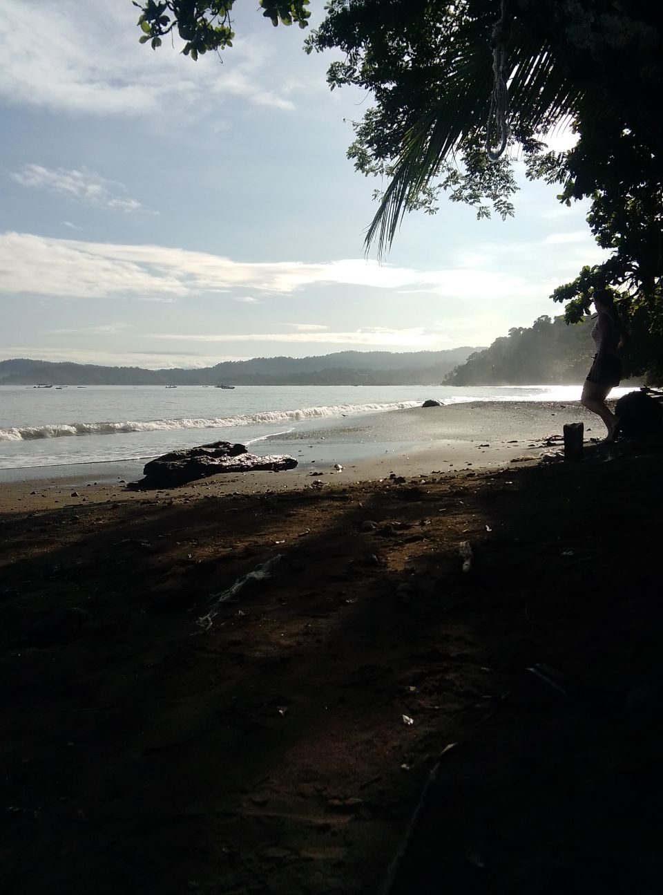
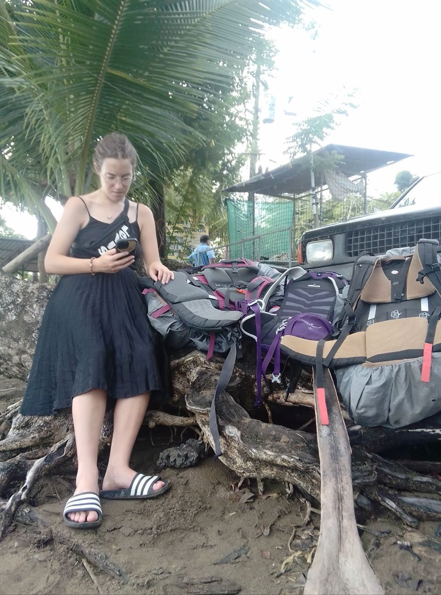
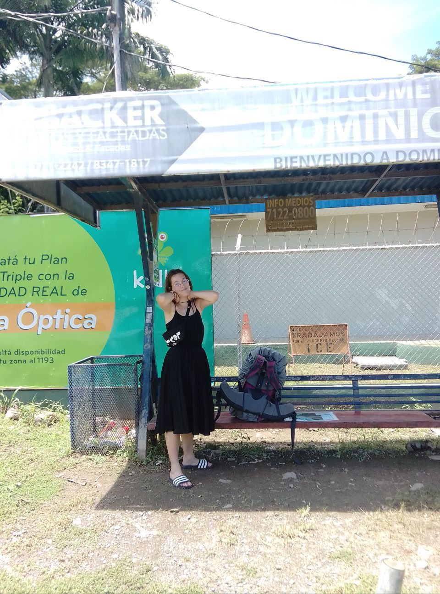

Étape 1 · Nature
Bahía Drake et le parc Corcovado
Après le bus du Nicaragua au Costa Rica, repos à San José. Le lendemain, bus pour Sierpe (7h à regarder un paysage magnifique et entièrement vert, on a même vu un crocodile), puis bateau dans les mangroves, avec course-poursuite d'un autre bateau, pour arriver à Bahía Drake. Quel périple !
Départ à l'aube pour le parc Corcovado, encore une heure de bateau, pieds dans l'eau faute de ponton. Le paysage est exceptionnel, on se croirait dans un reportage animalier. Une guide aussi surprise que nous en découvrant les animaux, sûrement l'un des plus beaux métiers du monde. On voit même un paresseux tomber d'un arbre et se rattraper de justesse — sachant que s'il tombe, il meurt. Retour des étoiles plein les yeux, à chercher des baleines depuis le bateau, en vain.


